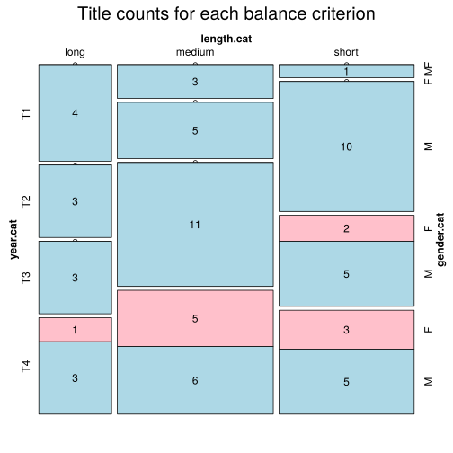

Click on a column heading to sort. Click on a text identifier to read the text (may not work in older browsers).
| Identifier | Encoding | Pages | Words | (Size) | Date (Slot) | Title | Author | Sex | Reprints |
|---|---|---|---|---|---|---|---|---|---|
| IT18370 |
eltec-1 | 59561 | (medium) | (T1) | Il Duca D'Atene | Tommaseo, Niccoló (1802-1874) | M | high | |
| IT18420 |
eltec-1 | 215495 | (long) | 1842 (T1) | Promessi Sposi | Manzoni, Alessandro (1785-1873) | M | high | |
| IT18500 |
eltec-1 | 127099 | (long) | 1850 (T1) | Damiano, storia di una famiglia povera | Carcano, Giulio, 1812-1884 | M | low | |
| IT18520 |
eltec-1 | 46720 | (short) | 1852 (T1) | Fede e bellezza | Tommaseo, Niccolò (1802-1874) | M | high | |
| IT18530 |
eltec-1 | 126277 | (long) | 1853 (T1) | Lorenzo Benoni, ovvero scene della vita di un italiano | Ruffini, Giovanni (1807-1881) | M | unspecified | |
| IT18590 |
eltec-1 | 420104 | (long) | 1859 (T1) | Cent'anni | Rovani, Giuseppe (1818-1874) | M | unspecified | |
| IT18600 |
eltec-1 | 202286 | (long) | 1860 (T2) | Pasquale Paoli, ossia La rotta di Ponte Nuovo | Guerrazzi, Francesco Domenico (1804-1873) | M | unspecified | |
| IT18610 |
eltec-1 | 65883 | (medium) | 1861 (T2) | La scapigliatura e il 6 febbrajo | Righetti, Carlo [Cletto Arrighi] (1828-1906) | M | unspecified | |
| IT18620 |
eltec-1 | 44091 | (short) | 1862 (T2) | I moribondi del Palazzo Carignano | Petruccelli della Gattina, Ferdinando (1815-1890) | M | unspecified | |
| IT18660 |
eltec-1 | 37113 | (short) | 1866 (T2) | Una peccatrice | Verga, Giovanni (1840-1922) | M | unspecified | |
| IT18670 |
eltec-1 | 338962 | (long) | 1867 (T2) | Le confessioni d'un Italiano | Nievo, Ippolito (1831-1861) | M | unspecified | |
| IT18671 |
eltec-1 | 142255 | (long) | 1867 (T2) | Memorie di Giuda | Petruccelli della Gattina, Ferdinando (1815-1890) | M | unspecified | |
| IT18690 |
eltec-1 | 72053 | (medium) | 1869 (T2) | Povera Giovanna! | Bersezio, Vittorio, 1828-1900 | M | low | |
| IT18691 |
eltec-1 | 57440 | (medium) | 1869 (T2) | Fosca | Tarchetti, Iginio Ugo (1839-1869) | M | unspecified | |
| IT18700 |
eltec-1 | 48977 | (short) | 1870 (T2) | Cantoni il volontario | Garibaldi, Giuseppe (1807-1882) | M | unspecified | |
| IT18701 |
eltec-1 | 74110 | (medium) | 1870 (T2) | Clelia ovvero Il governo dei preti | Garibaldi, Giuseppe (1807-1882) | M | unspecified | |
| IT18710 |
eltec-1 | 36110 | (short) | 1871 (T2) | Gli incendiari della Comune | Barbieri, Ulisse (1841-1899) | M | unspecified | |
| IT18711 |
eltec-1 | 20253 | (short) | 1871 (T2) | Lucifero Fantasia romantica | Barbieri, Ulisse (1842-1899) | M | unspecified | |
| IT18750 |
eltec-1 | 46863 | (short) | 1875 (T2) | Il marito di Elena | Verga, Giovanni (1840-1922) | M | unspecified | |
| IT18751 |
eltec-1 | 31508 | (short) | 1875 (T2) | Tigre reale | Verga, Giovanni (1840-1922) | M | unspecified | |
| IT18760 |
eltec-1 | 41194 | (short) | 1876 (T2) | Dio ne scampi dagli Orsenigo | Imbriani, Vittorio (1840-1886) | M | unspecified | |
| IT18780 |
eltec-1 | 60903 | (medium) | 1878 (T2) | La desinenza in A | Dossi, Carlo (1849-1910) | M | high | |
| IT18790 |
eltec-1 | 48093 | (short) | 1879 (T2) | Giacinta | Capuana, Luigi (1839-1915) | M | unspecified | |
| IT18810 |
eltec-1 | 69537 | (medium) | 1881 (T3) | Memorie Del Presbiterio | Praga, Emilio (1839-1875) | M | high | |
| IT18830 |
eltec-1 | 11483 | (short) | 1883 (T3) | Senso | Boito, Camillo (1836-1914) | M | high | |
| IT18831 |
eltec-1 | 41286 | (short) | 1883 (T3) | Le avventure di Pinocchio | Collodi, Carlo (1826 - 1890) | M | high | |
| IT18850 |
eltec-1 | 50911 | (medium) | 1885 (T1) | In basso | Barbieri, Ulisse (1841-1899) | M | low | |
| IT18851 |
eltec-1 | 93715 | (medium) | 1885 (T3) | Daniele Cortis | Fogazzaro, Antonio (1842-1911) | M | high | |
| IT18860 |
eltec-1 | 84116 | (medium) | 1886 (T3) | Cuore | De Amicis, Edmondo (1846-1908) | M | high | |
| IT18861 |
eltec-1 | 91037 | (medium) | 1886 (T4) | Il bacio d'una morta | Invernizio, Carolina (1851-1916) | F | high | |
| IT18880 |
eltec-1 | 55708 | (medium) | 1888 (T3) | Il Cappello del Prete | De Marchi, Emilio (1851-1901) | M | high | |
| IT18881 |
eltec-1 | 45536 | (short) | 1888 (T3) | Lydia | Neera (1846-1918) | F | high | |
| IT18890 |
eltec-1 | 104718 | (long) | 1889 (T3) | Il Piacere | D'Annunzio, Gabriele (1863-1938) | M | unspecified | |
| IT18891 |
eltec-1 | 21521 | (short) | 1889 (T3) | La trovatella di Milano | Invernizio, Carolina (1851-1916) | F | high | |
| IT18900 |
eltec-1 | 32828 | (short) | 1890 (T3) | Processi verbali | De Roberto, Federico (1861-1927) | M | unspecified | |
| IT18901 |
eltec-1 | 70467 | (medium) | 1890 (T3) | Il sorbetto della regina | Petruccelli della Gattina, Ferdinando (1815-1890) | M | unspecified | |
| IT18910 |
eltec-1 | 32277 | (short) | 1891 (T3) | Il maestro di setticlavio | Boito, Camillo (1836-1914) | M | unspecified | |
| IT18920 |
eltec-1 | 59185 | (medium) | 1892 (T3) | Profumo | Capuana, Luigi (?-?) | M | unspecified | |
| IT18921 |
eltec-1 | 77416 | (medium) | 1892 (T3) | L'Innocente | D'Annunzio, Gabriele (1863-1938) | M | high | |
| IT18921 |
eltec-1 | 114202 | (long) | 1892 (T3) | Una vita | Svevo, Italo (1861 - 1928) | M | high | |
| IT18940 |
eltec-1 | 68221 | (medium) | 1894 (T3) | Redivivo | De Marchi, Emilio (1851-1901) | M | high | |
| IT18941 |
eltec-1 | 209250 | (long) | 1894 (T3) | I Viceré | De Roberto, Federico (1861-1927) | M | unspecified | |
| IT18960 |
eltec-1 | 38175 | (short) | 1896 (T3) | La testa della vipera | Bersezio, Vittorio (1828-1900) | M | low | |
| IT18961 |
eltec-1 | 56540 | (medium) | 1896 (T3) | Le Vergini delle Rocce | D'Annunzio, Gabriele (1863-1938) | M | high | |
| IT18970 |
eltec-1 | 93065 | (medium) | 1897 (T3) | Giacomo l'idealista | De Marchi, Emilio (1851-1901) | M | high | |
| IT18980 |
eltec-1 | 66501 | (medium) | 1898 (T1) | Senilità | Svevo, Italo (1861 - 1928) | M | high | |
| IT19000 |
eltec-1 | 97471 | (medium) | 1900 (T4) | Il fuoco | D'Annunzio, Gabriele (1863-1938) | M | high | |
| IT19010 |
eltec-1 | 90004 | (medium) | 1901 (T4) | Piccolo mondo moderno | Fogazzaro, Antonio (1842-1911) | M | unspecified | |
| IT19011 |
eltec-1 | 55842 | (medium) | 1901 (T4) | L'Esclusa | Pirandello, Luigi (1867-1936) | M | high | |
| IT19012 |
eltec-1 | 89608 | (medium) | 1901 (T4) | I Misteri Delle Soffitte | Invernizio, Carolina (1851-1916) | F | high | |
| IT19030 |
eltec-1 | 55822 | (medium) | 1903 (T4) | Una Passione | Zuccari, Anna Maria (1846 - 1918) | F | high | |
| IT19040 |
eltec-1 | 75060 | (medium) | 1904 (T4) | Il fu Mattia Pascal | Pirandello, Luigi (1867-1936) | M | high | |
| IT19070 |
eltec-1 | 9457 | (short) | 1907 (T4) | Un Vampiro | Capuana, Luigi (1839-1915) | M | unspecified | |
| IT19120 |
eltec-1 | 108691 | (long) | 1912 (T4) | La mano tagliata | Serao, Matilde (1856-1927) | F | unspecified | |
| IT19121 |
eltec-1 | 27440 | (short) | 1912 (T4) | Il mio Carso | Slataper, Scipio (1888-1915) | M | high | |
| IT19130 |
eltec-1 | 59210 | (medium) | 1913 (T4) | Canne Al Vento | Deledda, Grazia (1871-1936) | F | high | |
| IT19130 |
eltec-1 | 143062 | (long) | 1913 (T4) | I vecchi e i giovani | Pirandello, Luigi (1867-1936) | M | high | |
| IT19130 |
eltec-1 | 58498 | (medium) | 1913 (T4) | La freccia nel fianco | Zuccoli, Luciano (1868-1929) | M | unspecified | |
| IT19131 |
eltec-1 | 16255 | (short) | 1913 (T2) | La Colonia Felice - Utopia | Dossi, Carlo | M | high | |
| IT19140 |
eltec-1 | 136283 | (long) | 1914 (T4) | Malombra | Fogazzaro, Antonio | M | high | |
| IT19150 |
eltec-1 | 97867 | (medium) | 1915 (T3) | Demetrio Pianelli | De Marchi, Emilio (1851-1901) | M | high | |
| IT19190 |
eltec-1 | 60037 | (medium) | 1919 (T4) | Una Donna | Aleramo, Sibilla (1876-1960) | F | high | |
| IT19191 |
eltec-1 | 46288 | (short) | 1919 (T4) | Con gli occhi chiusi | Tozzi, Federigo (1883-1920) | M | high | |
| IT19200 |
eltec-1 | 73239 | (medium) | 1901 (T4) | Il marchese di Roccaverdina | Capuana, Luigi (1839-1915) | M | high | |
| IT19201 |
eltec-1 | 28390 | (short) | 1920 (T4) | Tre croci | Tozzi, Federigo (1883-1920) | M | high | |
| IT19210 |
eltec-1 | 21692 | (short) | 1921 (T4) | Il Passaggio | Aleramo, Sibilla (1876-1960). | F | high | |
| IT19220 |
eltec-1 | 6366 | (short) | 1922 (T4) | Trasfigurazione | Aleramo, Sibilla (1876-1960) | F | high | |
| IT19221 |
eltec-1 | 41494 | (short) | 1922 (T4) | Il Dio Dei Viventi | Deledda, Grazia Cosima Damiana (1871-1936) | F | high | |
| IT19230 |
eltec-1 | 141904 | (long) | 1923 (T4) | La coscienza di Zeno | Svevo, Italo (1861 - 1928) | M | high | |
| IT19261 |
eltec-1 | 44880 | (short) | 1926 (T4) | Uno, nessuno e centomila | Pirandello, Luigi (1867-1936) | M | high |